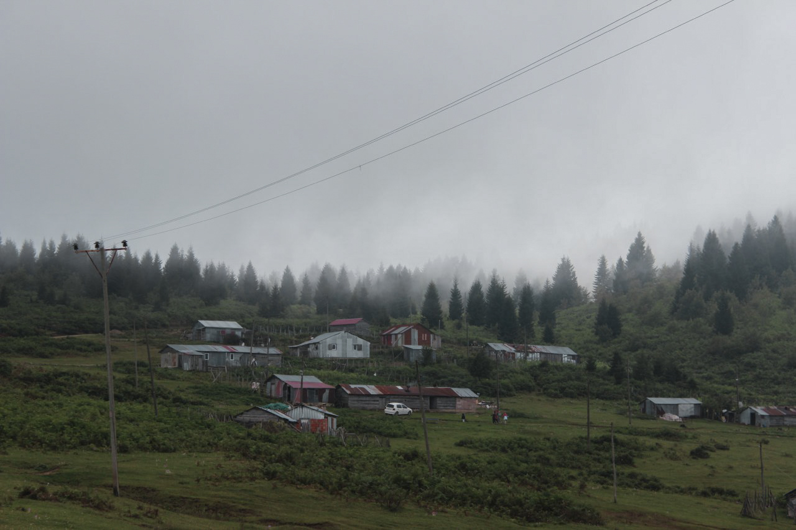

OsmanAydın
OsmanAydınGiresun’u Keşfedelim!

Giresun Adası
Giresun Adası, Kefken Adası ile birlikte
Karadeniz'de bulunan Türkiye'ye bağlı iki adadan biridir. Giresun Adası kıyıdan 1.6 km açıkta olup, 40.000
metrekare alana sahiptir. Adada özellikle Akdeniz defnesi ve Yalancı Akasya başta olmak üzere 71 tür doğal otsu ve
odunsu bitki türü bulunmaktadır.
Giresun Kalesi
Antik kaynaklarda "Bronz Duvarlı Kale"
olarak anlatılan Giresun kalesi, muhtemelen Pontus Kralı Pharnakes zamanında yapılmıştır. Trabzon
İmparatorluğu'nun 1300'lü yıllarda Türklere karşı en son sınır kalelerinden birisidir. Bu nedenle
1301 yıllarında Trabzon imparatoru Alexius tarafından tamir ettirilmiştir. Kalenin denize hakim oluşu
ve ticaret yollarının birleştiği noktada bulunuşu kıyı kontrollü amaçlı askeri bir yapı olduğunu
göstermektedir.
Mavi Göl
Kuzalan Tabiat Parkı ve Mavi Göl, Türkiye'de,
Giresun ilinin Dereli ilçesinde yer alan bir tabiat parkıdır. Giresun'a 45 km, Dereli'ye 13 km mesafededir.
482 hektar alana sahiptir.
Aksu-Göksu çaylarının birleştiği yerden batıya doğru uzanan Göksu Deresi Karadeniz bölgesinin tek sodalı deresidir.
Aksu Çayı ile Göksu Çayı'nın birleştiği noktadan batıya doğru çanak şeklinde en büyüğü 30 m çapında 5 adet göl
oluşturur.
Kulakkaya Yaylası
700 m. rakımda, ilginç doğa güzelliklere sahip, orman
güllerine ve vargit çiçeklerine ev sahipliği yapan yaylanın Giresun şehir merkezine mesafesi 40 km. Ordu-Giresun Havalimanına 85 km.'dir.
Yolu tamamen asfalt olup büyük araçlar içinde ulaşımı müsaittir.Giresun’un eskiden beri en çok bilinen ve gidilen
yaylasıdır. Yol üzerinde bulunan Despot Kayası ve Suyu, doğal güzelliklere sahip Erimez Mevkii, Gelin Kayası ayrı
birer ilgi odağıdır. Alçakbel Orman içi piknik alanında günübirlik dinlence, eğlence imkanı, hemen yakınındaki
Yavuz Kemal Beldesi'nde de her türlü alışveriş hizmeti bulunmaktadır. Kulakkaya-Alçakbel Mevkii’nde bulunan
Ormaniçi Eğitim Tesisleri ve yanındaki Orman içi Piknik Alanı günübirlik kullanışlara hizmet verirler.
Burada organize piknik sahası, çocuk parkı bulunmaktadır.

Kümbet Yaylası
Kümbet Yaylası, Doğu Karadeniz bölgesinde,
1640 metre rakımlı yayla doğu karadenizin en meşhur ve turistik yaylalarındandır. Giresun'un 52 km güneyinde Dereli
ilçe sınırlarındadır. Aymaç Tepesi, Şahİsmail Düzü, Melikli Obası, Şıh Obası Yavuzkemal gibi çok sayıda yayladan
oluşan Kümbet Yaylaları kamp ve piknik alanı olarak yoğun kullanılmaktadır. Kümbet'in 2 km batısındaki Aymaç
eşsiz bir zirvedir. Yine civarda bulunan Türkmen/Çepni obaları görülebilir. Muhteşem bir coğrafya'ya sahiptir.
Her temmuz ayının 2. pazar günü Dereli Belediye Başkanlığının öncülüğünde , yöre halkı ve turistlerin yoğun olarak
katıldığı Geleneksel Kümbet şenlikleri yapılmaktadır. Şenliğin asıl kaynağı eski Ot göçleridir.